PSAT-언어논리 (2020-05-16 기출문제)
1. 다음 글에서 알 수 있는 것은?
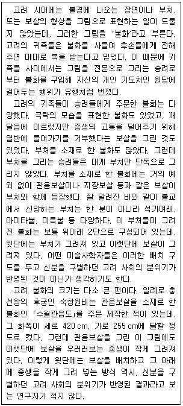
- 충선왕 때 숙창원비는 관음보살과 아미타불이 함께 등장하는 불화를 주제작해 왕궁에 보관했다.
- 고려 시대에는 승려들이 귀족의 주문을 받아 불화를 사찰에 걸어두고 그 후손들이 내세에 복을 받게 해달라고 기원했다.
- 고려 시대에 그려진 불화에는 귀족으로 묘사된 석가여래가 그림의 윗단에 배치되어 있고, 아랫단에 평민 신분의 인물이 배치되어 있다.
- 고려 시대에 그려진 불화의 크기가 큰 것은 당시 화가들 사이에 여러 명의 등장인물을 하나의 그림 안에 동시에 표현하는 관행이 자리 잡았기 때문이다.
- 고려 시대의 불화 중 부처가 윗단에 배치되고 보살이 아랫단에 배치된 구도를 지닌 그림에는 신분을 구별하던 고려 사회의 분위기가 반영되어 있다고 보는 학자들이 있다.
(정답률: 40%)

2. 다음 글에서 알 수 있는 것은?
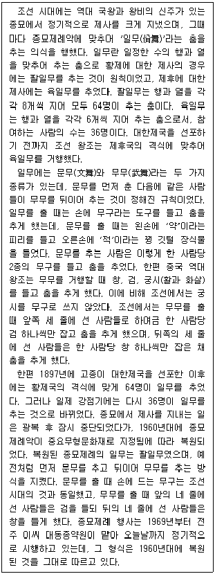
- 대한제국 시기에는 종묘제례에서 문무를 출 때 궁시를 들지 않고 검과 창만 들었다.
- 일제 강점기 때 거행된 종묘제례에서는 문무를 육일무로 추었고, 무무는 팔일무로 추었다.
- 조선 시대에는 종묘제례에서 무무를 출 때 한 사람당 4종의 무구를 손에 들고 춤을 추게 했다.
- 조선 시대에 종묘제례를 거행할 때에는 육일무를 추도록 하되 제후국의 격식에 맞추어 무무만 추었다.
- 오늘날 시행되고 있는 종묘제례 행사에서 문무를 추는 사람들은 한 사람당 2종의 무구를 손에 들고 춤을 춘다.
(정답률: 40%)
3. 다음 글에서 알 수 있는 것은?
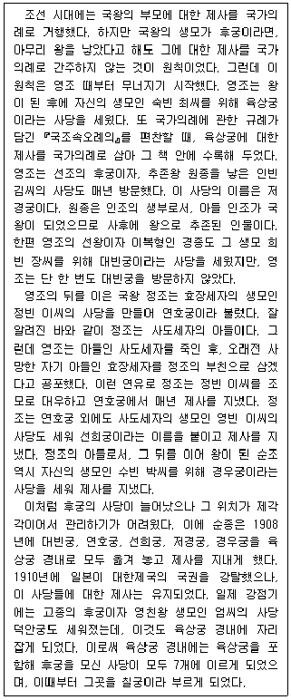
- 경종은 선희궁과 연호궁에서 거행되는 제사에 매년 참석했다.
- 「국조속오례의」가 편찬될 때 대빈궁, 연호궁, 선희궁, 경우궁에 대한 제사가 국가의례에 처음 포함되었다.
- 영빈 이씨는 영조의 후궁이었던 사람이며, 수빈 박씨는 정조의 후궁이었다.
- 고종이 대빈궁, 연호궁, 선희궁, 저경궁, 경우궁을 육상궁 경내로 이전해 놓음에 따라 육상궁은 칠궁으로 불리게 되었다.
- 조선 국왕으로 즉위해 실제로 나라를 다스린 인물의 생모에 해당하는 후궁으로서 일제 강점기 때 칠궁에 모셔져 있던 사람은 모두 5명이었다.
(정답률: 37%)
4. 다음 글의 내용과 부합하지 않는 것은?
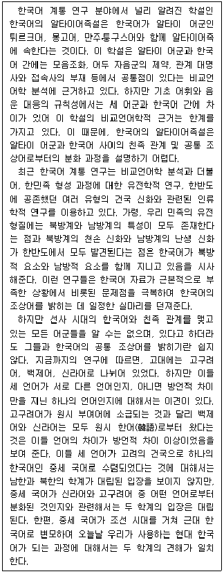
- 비교언어학적 근거의 한계로 인해 한국어의 알타이어족설은 알타이 어군과 한국어 간의 친족 관계를 설명하기 어렵다.
- 한반도의 천손 신화에 대한 인류학적 연구는 한국어에 북방적 요소가 있음을 시사한다.
- 최근 한국어 계통 연구는 부족한 한국어 자료를 보완하기 위해 한민족의 유전 형질에 대한 정보와 한반도에 공존한 건국 신화들을 이용한다.
- 최근 한국어 계통 연구에서 백제어와 고구려어는 방언적 차이로 인해 서로 다른 계통으로 분류된다.
- 중세 국어에서 현대 한국어에 이르는 한국어 형성 과정에 대한 남북한 학계의 견해는 일치한다.
(정답률: 32%)
5. 다음 글의 ㉠과 ㉡에 들어갈 말을 가장 적절하게 나열한 것은?
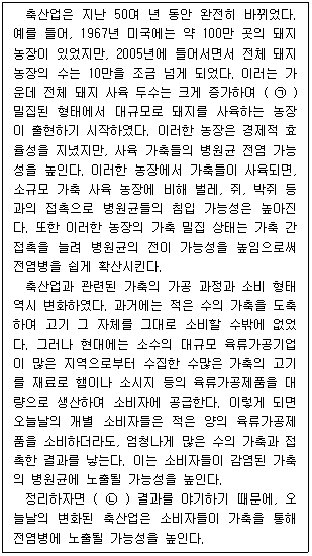
- ㉠:농장당 돼지 사육 두수는 줄고 사육 면적당 돼지의 수도 줄어든
㉡:가축 사육량과 육류가공제품 소비량이 증가하는 - ㉠:농장당 돼지 사육 두수는 줄고 사육 면적당 돼지의 수도 줄어든
㉡:가축 간 접촉이 늘고 소비자도 많은 수의 가축과 접촉한 - ㉠:농장당 돼지 사육 두수는 늘고 사육 면적당 돼지의 수도 늘어난
㉡:가축 사육량과 육류가공제품 소비량이 증가하는 - ㉠:농장당 돼지 사육 두수는 늘고 사육 면적당 돼지의 수도 늘어난
㉡:가축 간 접촉이 늘고 소비자도 많은 수의 가축과 접촉한 - ㉠:농장당 돼지 사육 두수는 늘고 사육 면적당 돼지의 수도 늘어난
㉡:가축 간 접촉이 늘고 소비자는 적은 수의 가축과 접촉한
(정답률: 34%)
6. 다음 글에서 알 수 있는 것은?
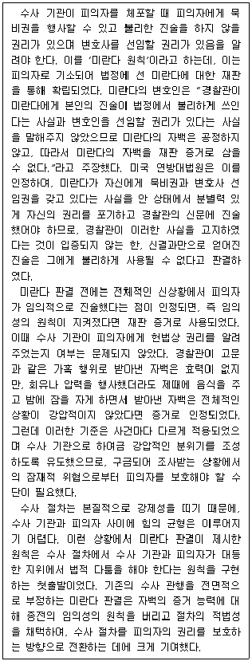
- 미란다 원칙을 확립한 재판에서 미란다는 무죄 판정을 받았다.
- 미란다 판결은 피해자의 권리에 있어 임의성의 원칙보다는 절차적 적법성이 중시되어야 한다는 점을 부각시켰다.
- 미란다 판결은 법원이 수사 기관이 행하는 고문과 같은 가혹행위에 대해 수사 기관의 법적 책임을 묻는 시초가 되었다.
- 미란다 판결 전에는 수사 과정에 강압적인 요소가 있었더라도 피의자가 임의적으로 진술한 자백의 증거 능력이 인정될 수 있었다.
- 미란다 판결에서 연방대법원은 피의자가 변호사 선임권이나 묵비권을 알고 있었다면 경찰관이 이를 고지하지 않아도 피의자의 자백은 효력이 있다고 판단하였다.
(정답률: 23%)
7. 다음 글에서 알 수 없는 것은?
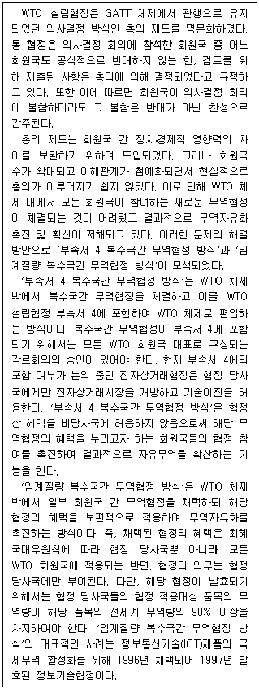
- '임계질량 복수국간 무역협정 방식'에 따라 채택된 협정의 혜택을 받는 국가는 해당 협정의 의무를 부담하는 국가보다 적을 수 없다.
- WTO의 의사결정 회의에 제안된 특정 안건을 지지하는 경우, 총의 제도에 따르면 그 회의에 불참하더라도 해당 안건에 대한 찬성의 뜻을 유지할 수 있다.
- WTO 회원국은 전자상거래협정에 가입하지 않는다면 동 협정의 법적 지위에 영향을 미칠 수 없다.
- WTO 각료회의가 총의 제도를 유지한다면 '부속서 4 복수국간 무역협정 방식'의 도입 목적은 충분히 달성하기 어렵다.
- 1997년 발효 당시 정보기술협정 당사국의 ICT제품 무역규모량의 총합은 해당 제품의 전세계 무역량의 90% 이상일 것으로 추정할 수 있다.
(정답률: 31%)
8. 다음 글에서 알 수 있는 것은?
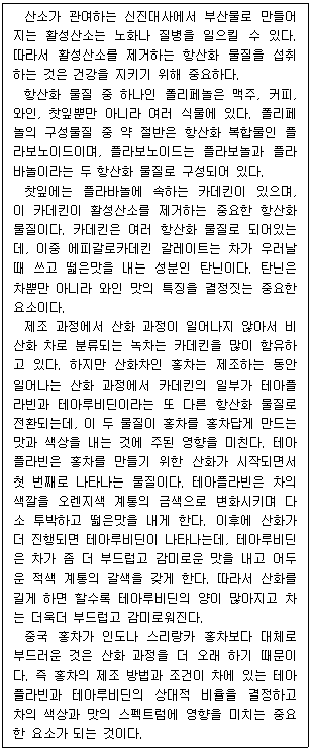
- 테아루비딘의 양에 대한 테아플라빈의 양의 비율은 오렌지색 계통의 금색 홍차보다 어두운 적색 계통의 갈색 홍차에서 더 높다.
- 찻잎에 있는 플라보노이드는 활성산소가 생성되지 못하게 함으로써 항산화 작용을 한다.
- 와인과 커피는 플라바놀이 들어있는 폴리페놀을 가지고 있다.
- 에피갈로카데킨 갈레이트는 녹차보다 홍차에 더 많이 들어있다.
- 인도 홍차보다 중국 홍차에 카데킨이 더 많이 들어있다.
(정답률: 29%)
9. 다음 글에서 추론할 수 있는 것만을 ＜보기＞에서 모두 고르면?
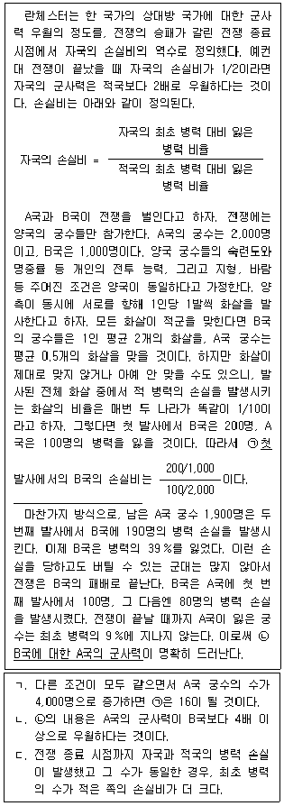
- ㄱ
- ㄷ
- ㄱ, ㄴ
- ㄴ, ㄷ
- ㄱ, ㄴ, ㄷ
(정답률: 25%)
10. 다음 글의 ㉠과 ㉡에 대한 분석으로 적절한 것은?
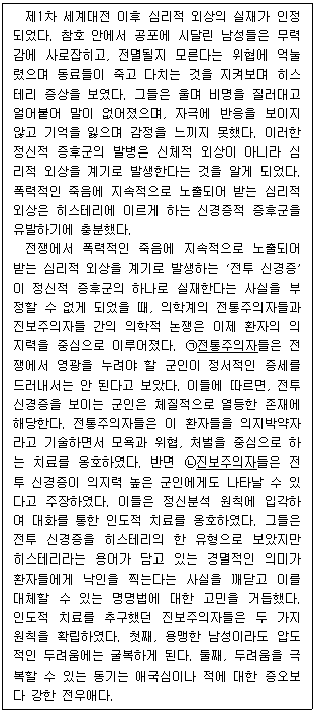
- ㉠과 ㉡의 히스테리 치료 방식은 같다.
- ㉠과 ㉡은 모두 전투 신경증의 증세가 실재한다고 본다.
- ㉠과 ㉡은 전투 신경증이 어떤 계기로 발생하는가에 대해 서로 다른 견해를 보인다.
- ㉠과 ㉡은 모두 환자들에게 히스테리라는 용어를 사용하는 것이 부정적인 낙인을 찍는다고 본다.
- ㉡은 ㉠보다 전투 신경증에 의한 히스테리 증상이 더 다양한 형태로 나타난다고 본다.
(정답률: 32%)
11. 다음 글의 내용이 참일 때, 반드시 참인 것은?
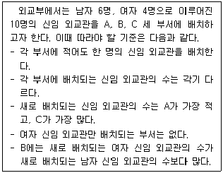
- A에는 1명의 신임 외교관이 배치된다.
- B에는 3명의 신임 외교관이 배치된다.
- C에는 5명의 신임 외교관이 배치된다.
- B에는 1명의 남자 신임 외교관이 배치된다.
- C에는 2명의 여자 신임 외교관이 배치된다.
(정답률: 11%)
12. 다음 글의 내용이 참일 때, 반드시 참인 것은?
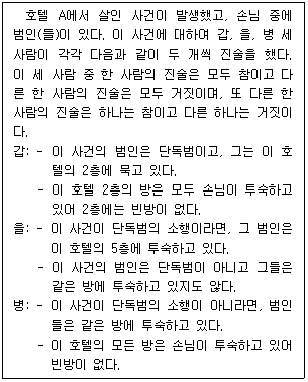
- 갑의 진술 둘 다 거짓일 수 있다.
- 2층에는 빈방이 없지만, 다른 층에는 빈방이 있다.
- 병의 진술이 둘 다 거짓이라면, 갑의 진술 중 하나는 거짓이다.
- 을의 진술이 둘 다 거짓이라면, 이 사건은 단독범의 소행이 아니다.
- 갑의 진술 중 하나만 참이라면, 이 사건의 범인은 단독범이 아니다.
(정답률: 7%)
13. 다음 갑~병의 견해에 대한 분석으로 적절한 것만을 ＜보기＞에서 모두 고르면?
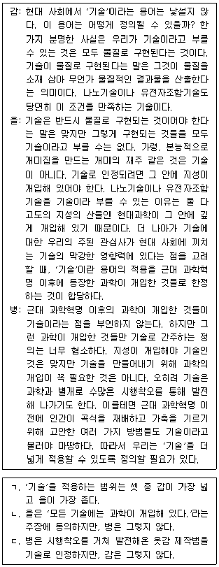
- ㄱ
- ㄴ
- ㄱ, ㄷ
- ㄴ, ㄷ
- ㄱ, ㄴ, ㄷ
(정답률: 22%)
14. 다음 논쟁에 대한 분석으로 가장 적절한 것은?
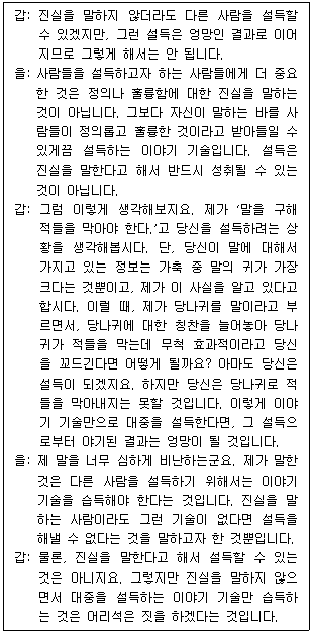
- 갑과 을은 진실을 이야기한다고 하더라도 설득에 실패할 수 있다는 것에 동의한다.
- 갑과 을은 이야기 기술만으로 사람들을 설득하는 경우가 가능하다는 것에 동의하지 않는다.
- 갑과 을은 진실하지 않은 것을 말하는 이야기 기술을 습득하지 말아야 한다는 것에 동의한다.
- 갑은 이야기 기술을 가지고 있다고 하더라도 설득에 실패할 수 있다는 것을 긍정하지만, 을은 부정한다.
- 갑은 진실하지 않은 것을 믿게끔 설득하는 것으로부터 야기된 결과가 나쁠 수 있다는 것을 긍정하지만, 을은 부정한다.
(정답률: 23%)
15. 다음 글에서 추론할 수 없는 것은?
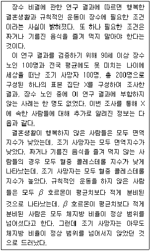
- X에 속한 모든 사람은 규칙적으로 운동을 했다.
- X에 속한 장수 노인 중에 혈중 콜레스테롤 지수가 높은 사람은 없다.
- X에 속한 조기 사망자 중에 짜거나 기름진 음식을 즐겨 먹은 사람이 있었다.
- X에 속한 장수 노인 중에 체지방 비율이 정상 범위를 넘어서지 않는 사람이 있다.
- X에 속한 조기 사망자라면 누구나 결혼생활이 행복하지 않았거나 β호르몬이 평균치보다 적게 분비되지 않았다.
(정답률: 3%)
16. 다음 글의 ㉠에 대한 평가로 적절한 것만을 ＜보기＞에서 모두 고르면?
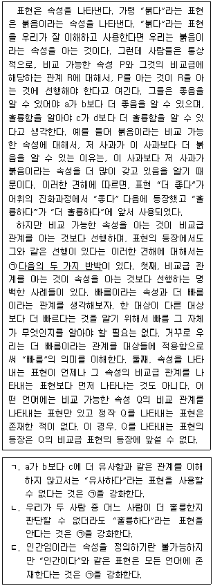
- ㄱ
- ㄷ
- ㄱ, ㄴ
- ㄴ, ㄷ
- ㄱ, ㄴ, ㄷ
(정답률: 20%)
17. 다음 글의 <실험>에 대한 분석으로 가장 적절한 것은?
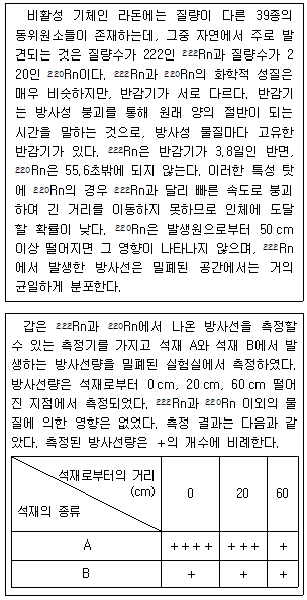
- A는 220Rn을 포함하지 않는다.
- B는 222Rn과 220Rn을 모두 포함한다.
- 0cm 떨어진 지점에서 측정된 A의 방사선은 모두 222Rn에서 나온 것이다.
- 20cm 떨어진 지점에서 측정된 방사선 중 222Rn에서 나온 방사선량은 B보다 A가 더 많다.
- 60cm 떨어진 지점에서 측정된 A의 방사선과 B의 방사선은 모두 222Rn에서 나온 것이다.
(정답률: 23%)
18. 다음 글의 ㉠에 대한 평가로 적절한 것만을 ＜보기＞에서 모두 고르면?
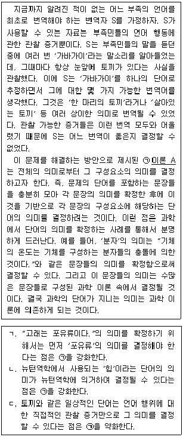
- ㄱ
- ㄴ
- ㄱ, ㄷ
- ㄴ, ㄷ
- ㄱ, ㄴ, ㄷ
(정답률: 16%)
19. 위 글의 ㉠과 ㉡에 대한 평가로 적절한 것만을 ＜보기＞에서 모두 고르면?(19번 공통지문 문제)
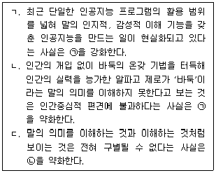
- ㄱ
- ㄴ
- ㄱ, ㄷ
- ㄴ, ㄷ
- ㄱ, ㄴ, ㄷ
(정답률: 16%)
20. 다음 글에서 알 수 있는 것은?
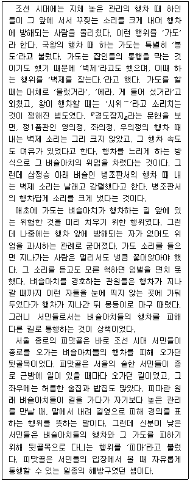
- 삼정승 행차보다 병조판서 행차 때의 벽제 소리가 더 컸다.
- 봉도란 국왕이 행차한다는 소리를 듣고 꿇어앉는 행위를 뜻한다.
- 벼슬아치가 행차할 때 잡인들의 통행을 막으면서 서민들에 대한 감시가 증가했다.
- 조선 시대에 신분이 낮은 서민들은 피마라는 용어를 말에서 내려 길을 피한다는 의미로 바꿔 썼다.
- 가도는 주로 서울을 중심으로 행해졌기 때문에 벼슬아치들의 행차를 피하기 위해 형성된 장소도 서울에만 있다.
(정답률: 18%)
21. 다음 글에서 알 수 있는 것은?
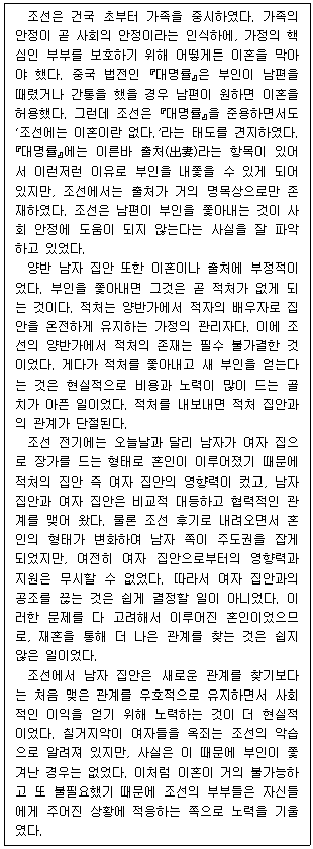
- 조선 사회에서 양반 계층보다는 평민이나 노비 계층에서 이혼이 빈번했다.
- 조선의 양반 집안은 적처를 쫓아내기보다는 현실적인 이유에서 결혼을 유지하였다.
- 조선에서 적처의 존재를 중요하게 생각한 것은 부인의 역할이 중국과는 달랐기 때문이다.
- 조선 시대에는 중국 법전의 출처 항목에 명시된 사유에 해당한다고 판단될 경우 이혼을 실질적으로 용인하였다.
- 조선 시대에 국가는 이혼을 막기 위해 남자 집안과 여자 집안 간의 공조를 유지시키기 위한 지원 정책을 실시했다.
(정답률: 18%)
22. 다음 글에서 알 수 있는 것은?
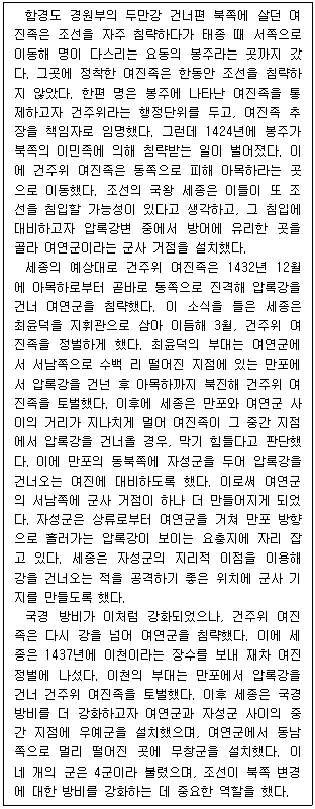
- 여연군이 설치되어 있던 곳에서 동쪽 방면으로 곧장 나아가면 아목하에 도착할 수 있었다.
- 최윤덕은 여연군과 무창군을 잇는 직선 거리의 중간 지점에서 강을 건너 여진족을 정벌했다.
- 이천의 두 번째 여진 정벌이 끝난 직후에 조선은 북쪽 국경의 방비를 강화하고자 자성군과 우예군, 무창군을 신설했다.
- 세종은 여진의 침입에 대비하기 위해 경원부를 여연군으로 바꾸고, 최윤덕을 파견해 그곳 인근에 3개 군을 더 설치하게 했다.
- 4군 중 하나인 여연군으로부터 압록강 물줄기를 따라 하류로 이동하면 이천의 부대가 왕명에 따라 여진을 정벌하고자 압록강을 건넜던 지역에 이를 수 있었다.
(정답률: 14%)
23. 다음 글의 내용과 부합하는 것은?
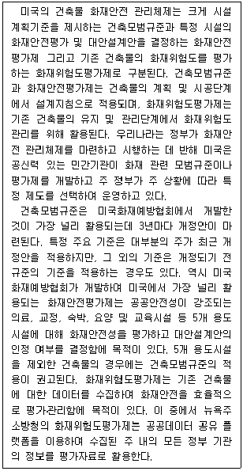
- 건축모범규준이나 화재안전평가제에 따르면 공공안전성이 강조되는 건물에는 특정 주요 기준이 강제적으로 적용되고 있다.
- 건축모범규준, 화재안전평가제, 화재위험도평가제 모두 건축물의 설계ㆍ시공단계에서 화재안전을 확보하는 수단이다.
- 건축모범규준을 적용하여 건축물을 신축하는 경우 반드시 가장 최근에 개정된 기준에 따라야 한다.
- 미국에서는 민간기관인 미국화재예방협회가 건축모범규준과 화재안전평가제를 개발ㆍ운영하고 있다.
- 뉴욕주 소방청은 화재위험도 평가에 타 기관에서 수집한 정보를 활용한다.
(정답률: 12%)
24. 다음 글에서 알 수 있는 것은?
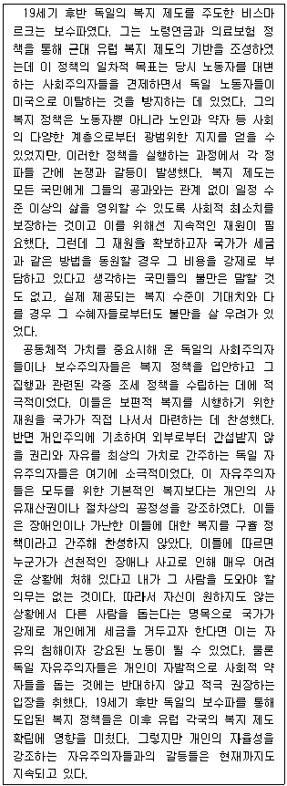
- 독일 자유주의자들은 구휼 정책에는 반대했지만 개인적 자선 활동에는 찬성하였다.
- 독일 보수주의자들은 복지 정책에 드는 재원을 마련하면서 그 부담을 특정 계층에게 전가하였다.
- 독일 보수주의자들이 집권한 당시 독일 국민의 노동 강도는 높아졌고 개인의 자율성은 침해되었다.
- 공동체적 가치를 강조하는 사회주의적 전통이 확립될수록 복지 정책에 대한 독일 국민들의 불만은 완화되었다.
- 독일 사회주의자들이 제안한 노동자를 위한 사회 보장 정책은 독일 보수주의자들에 의해 전 국민에게로 확대되었다.
(정답률: 14%)
25. 다음 글에서 알 수 있는 것은?
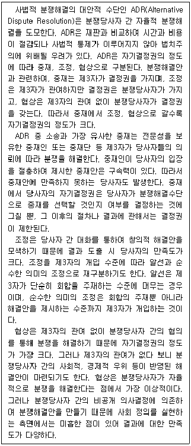
- 중재는 분쟁해결안의 구속력으로 인해 분쟁당사자의 결과에 대한 만족도가 가장 낮다.
- 협상은 제3자의 개입 정도가 가장 낮으므로 사법적 통제도 가장 낮게 이루어진다.
- 협상은 중재나 조정보다 분쟁 해결에 요구되는 시간이 가장 짧은 분쟁해결수단이다.
- 당사자 간 분쟁해결안 자체를 만듦에 있어 알선은 협상보다 자기결정권의 정도가 크다.
- ADR 중에서 자기결정권의 정도가 가장 큰 것이 사회 정의 실현에 충분히 기여하는 것은 아니다.
(정답률: 14%)
26. 다음 글에서 추론할 수 있는 것만을 ＜보기＞에서 모두 고르면?
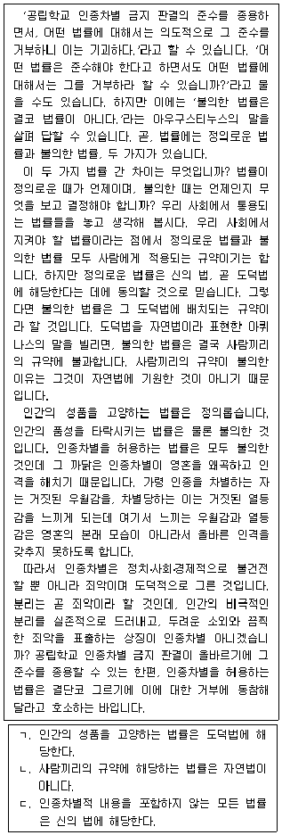
- ㄱ
- ㄷ
- ㄱ, ㄴ
- ㄴ, ㄷ
- ㄱ, ㄴ, ㄷ
(정답률: 20%)
27. 다음 글에서 알 수 있는 것은?
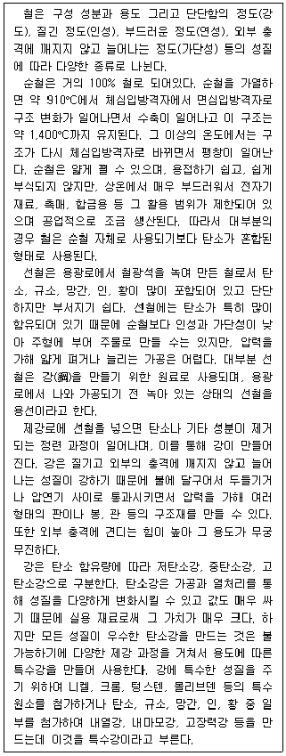
- 순철은 연성이 높기 때문에 온도에 의한 구조 변화와 수축ㆍ팽창이 쉽게 일어난다.
- 순철은 선철보다 덜 질기고 외부 충격에 깨지지 않고 늘어나는 정도가 더 낮다.
- 용선이 가지고 있는 탄소의 양은 저탄소강이 가지고 있는 탄소의 양보다 적다.
- 제강로에서 일어나는 정련 과정은 선철의 인성과 가단성을 높인다.
- 고장력강의 탄소 함유량은 고탄소강의 탄소 함유량보다 더 낮다.
(정답률: 14%)
28. 다음 글에서 추론할 수 있는 것은?
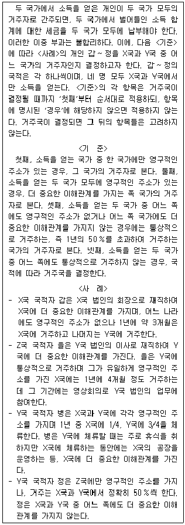
- 갑과 병은 거주국이 같다고 결정된다.
- 갑~정 중 거주국이 결정되지 않는 사람이 있다.
- 갑~정 중 국적이 Z국인 사람은 Y국의 거주자로 결정된다.
- 갑~정 중 Z국에 영구적인 주소를 가지는 사람의 거주국은 X국으로 결정된다.
- 갑~정 중, X국의 거주자로 결정된 사람의 수와 Y국의 거주자로 결정된 사람의 수는 같다.
(정답률: 0%)
29. 다음 글의 갑~병에 대한 분석으로 가장 적절한 것은?
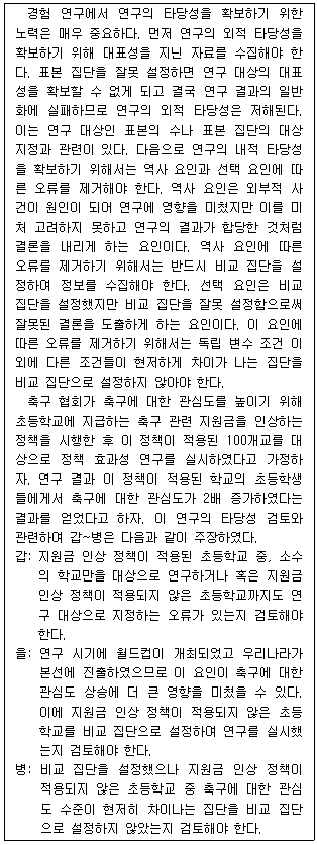
- 갑은 연구의 내적 타당성을 확보하기 위해 연구 대상의 대표성 확보에 관한 타당성을 검토하자는 것이다.
- 을은 연구의 내적 타당성을 확보하기 위해 선택 요인과 관련한 타당성을 검토하자는 것이다.
- 을은 연구의 외적 타당성을 확보하기 위해 역사 요인과 관련한 타당성을 검토하자는 것이다.
- 병은 연구의 내적 타당성을 확보하기 위해 선택 요인과 관련한 타당성을 검토하자는 것이다.
- 병은 연구의 외적 타당성을 확보하기 위해 연구 결과 일반화가 가능한 표본 집단 선정에 관한 타당성을 검토하자는 것이다.
(정답률: 0%)
30. 다음 글의 내용이 참일 때, 반드시 참이라고는 할 수 없는 것은?
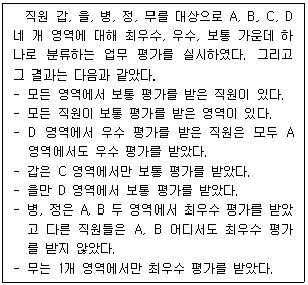
- 갑은 A 영역에서 우수 평가를 받았다.
- 을은 B 영역에서 보통 평가를 받았다.
- 병은 C 영역에서 보통 평가를 받았다.
- 정은 D 영역에서 최우수 평가를 받았다.
- 무는 A 영역에서 우수 평가를 받았다.
(정답률: 3%)
31. 다음 대화의 ㉠에 들어갈 말로 가장 적절한 것은?
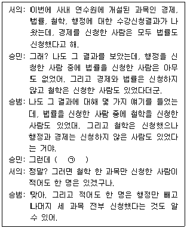
- 경제와 법률 두 과목만을 신청한 사람은 한 명도 없어.
- 행정과 철학 두 과목만을 신청한 사람은 한 명도 없어.
- 법률과 철학 두 과목만을 신청한 사람은 한 명도 없어.
- 경제와 법률을 둘 다 신청한 사람은 모두 철학을 신청했어.
- 법률과 철학을 둘 다 신청한 사람 중에 행정을 신청한 사람은 없어.
(정답률: 9%)
32. 다음 갑~병의 견해에 대한 분석으로 적절한 것만을 ＜보기＞에서 모두 고르면?
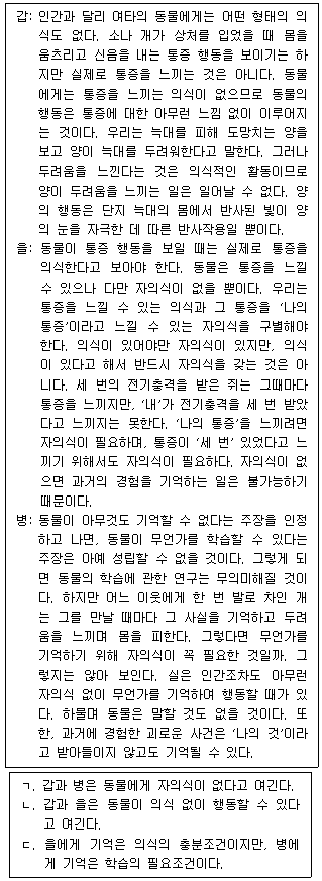
- ㄱ
- ㄷ
- ㄱ, ㄴ
- ㄴ, ㄷ
- ㄱ, ㄴ, ㄷ
(정답률: 0%)
33. 다음 논쟁에 대한 분석으로 가장 적절한 것은?
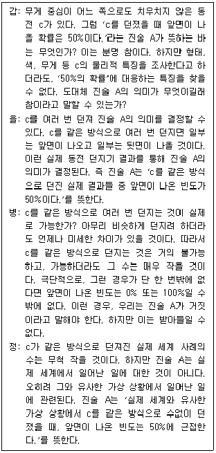
- 갑은 A가 참이라고 생각하지만, 병은 거짓이라고 생각한다.
- 을은 c를 같은 방식으로 여러 차례 던질 수 없다고 주장하지만, 병은 그렇지 않다.
- 병은 c를 다양한 방식으로 던진 동전 던지기의 결과가 A의 진위에 영향을 끼친다고 주장하지만, 정은 그렇지 않다.
- 병과 정은 실제 세계에서 c를 같은 방식으로 던지는 사례의 수가 매우 작을 수 있다는 것에 동의한다.
- 갑, 을, 정 모두 c의 물리적 특징을 안다면 A의 뜻을 결정할 수 있다는 것에 동의한다.
(정답률: 11%)
34. 다음 글에 대한 분석으로 적절한 것만을 ＜보기＞에서 모두 고르면?
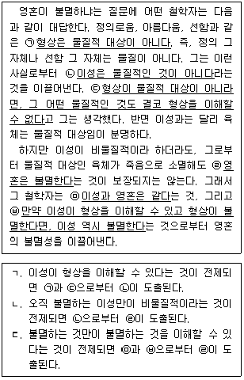
- ㄱ
- ㄴ
- ㄱ, ㄷ
- ㄴ, ㄷ
- ㄱ, ㄴ, ㄷ
(정답률: 0%)
35. 다음 글의 ㉠~㉢에 대한 평가로 적절한 것만을 ＜보기＞에서 모두 고르면?
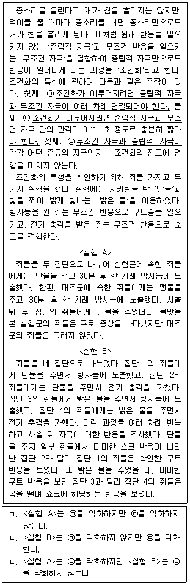
- ㄱ
- ㄴ
- ㄱ, ㄷ
- ㄴ, ㄷ
- ㄱ, ㄴ, ㄷ
(정답률: 0%)
36. 다음 글의 ㉠에 대한 주장을 약화하는 진술만을 ＜보기＞에서 모두 고르면?
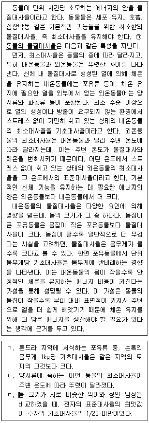
- ㄱ
- ㄷ
- ㄱ, ㄴ
- ㄴ, ㄷ
- ㄱ, ㄴ, ㄷ
(정답률: 0%)
37. 다음 글의 논지를 강화하는 것만을 ＜보기＞에서 모두 고르면?
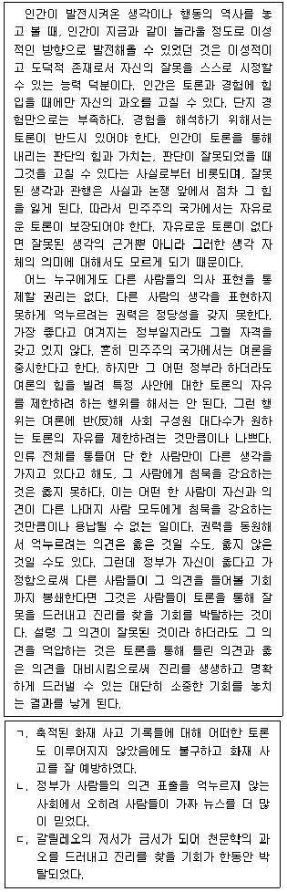
- ㄱ
- ㄷ
- ㄱ, ㄴ
- ㄴ, ㄷ
- ㄱ, ㄴ, ㄷ
(정답률: 11%)
38. 위 글의 ㉠에 들어갈 말로 가장 적절한 것은?(39번 공통지문 문제)
- TSH 수치만으로는 rT3의 양이나 효과를 가늠할 수 없기
- rT3의 작용으로 T3의 생성이 억제되면서 T4의 상대적 비중이 왜곡될 수 있기
- TSH 수치가 정상이 아니어도 rT3의 작용으로 T3과 T4의 농도가 정상 범위일 수 있기
- TSH 수치를 토대로 음성 되먹임 원리를 응용하여 갑상선호르몬의 분비량을 알 수 있기
- 외부에서 유입되는 유해물질의 농도 등 갑상선 기능에 영향을 미치는 요소를 TSH 측정만으로는 파악할 수 없기
(정답률: 5%)